世界の葉巻ニュース 特集ゲラ
特集 — ホヤ・デ・ニカラグア 安くて美味い、ニカラグア最古の意地
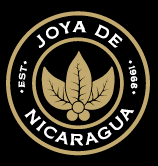
ホヤ・デ・ニカラグア（Joya de Nicaragua）は、ニカラグアで最も古いプレミアム葉巻ブランドです。創業は1968年。キューバ革命で島を追われた葉巻職人たちが、エステリの火山土に「第二のキューバ」を見て興した会社でした。ホワイトハウスの公式葉巻に選ばれる栄光、独裁者への取り入り、革命で燃えた工場、国有化、そして労働者自身の手による再建――その58年は、ニカラグアという国そのものの激動と重なります。それでいて値段は、今も1本1,300円前後から。キューバ葉巻の高騰で手が届かなくなった今、「安くて美味い葉巻の代名詞」と呼ばれるこの古豪を掘り下げます。
◆ 一、歴史 — ホワイトハウスの葉巻が、革命で燃えるまで
1968年2月29日、キューバ人亡命者のシモン・カマーチョとフアン・フランシスコ・ベルメホが、ニカラグア北部のエステリに「ニカラグア・シガー・カンパニー」を設立します。ニカラグア初のプレミアム葉巻工場でした。最初の銘柄こそが、現在の「クラシコ」に連なるホヤ・デ・ニカラグアです。社名の「ホヤ」は英語の joy ではなく、スペイン語で「宝石」。文字どおり「ニカラグアの宝石」として生まれました。
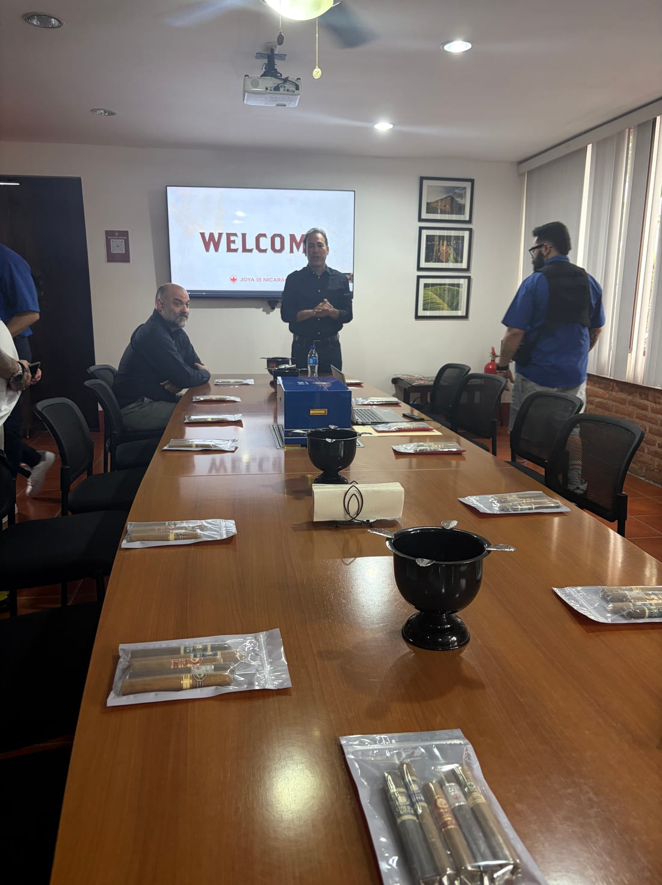
折しも米国は、キューバ禁輸でハバノスを失ったばかり。代わりを求める米国の喫煙家に、ホヤは鮮やかに応えます。1970年代初頭にはニクソン、フォード両政権のもとでホワイトハウスの公式葉巻に選ばれるまでになりました。工場では今も、こんな逸話が語り継がれています。ニカラグアの独裁者アナスタシオ・ソモサがホワイトハウスを訪れ、出された葉巻の箱を開けて驚いた――中身が自国の葉巻だった、というのです。
そのソモサは、やがて会社の経営に食い込みます。取材記によれば、融資を盾に会社の約75%を掌握し、葉巻を自らの外交の道具にさえしました。独裁者の資産と見なされたことが、後の悲劇を呼びます。1970年代末、サンディニスタ革命の戦火がエステリを包むと、工場は放火され、ソモサ側の空軍に爆撃まで受けたといいます。1979年に革命が成就すると、新政権は会社を国有化しました。
それでも葉巻づくりは止まりませんでした。工場を再建し、仮の場所で生産をつないだのは、労働者たち自身だったと伝えられます。1980年代には米国の対ニカラグア禁輸で最大の市場を失い、生産の一部は隣国ホンジュラスに移されました。1998年にはハリケーン・ミッチが葉の産地を襲います。栄光と災厄の落差は、これほど極端なメーカーも珍しいでしょう。

◆ 二、クエンカ博士とマルティネス家 — 労働者に請われて買った会社
国有化ののち会社は民営化され、工場は69人の労働者たちの所有になっていました。その労働者たちに請われる形で現れたのが、経済学者で、サンディニスタ政権では通商分野の閣僚も務めたアレハンドロ・マルティネス・クエンカ博士です。1992年、博士はまず試行的に工場を借り受け、1994年、労働者たちの要請を受けて会社を買収。「タバコス・プーロス・デ・ニカラグア」と改めました。
ただし、看板は他人のものでした。「ホヤ・デ・ニカラグア」の商標は混乱の時代に売却され、博士の手元にはなかったのです。博士は3年をかけて交渉し、商標を買い戻します。そして2005年、社名もついに「ホヤ・デ・ニカラグア」に戻しました。革命で燃えた工場が、名前まで取り戻すのに四半世紀を要したことになります。
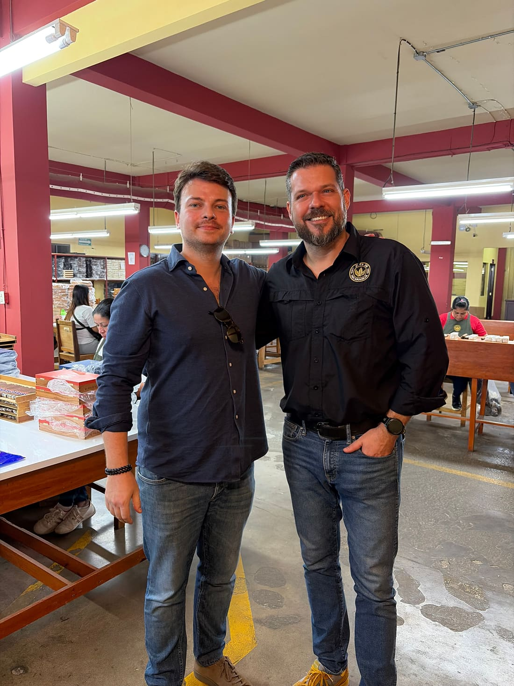
現在、クエンカ博士は会長として社を見守り、実務は息子のファン・イグナシオ・マルティネスが社長として率います。2012年頃に社へ入った二代目は、後述するモダンな「JOYA」ライン群や海外市場の開拓を主導してきた世代です。50を超える国へ輸出される今も、本社はエステリの同じ工場。一族と労働者の町工場、という素顔は変わりません。
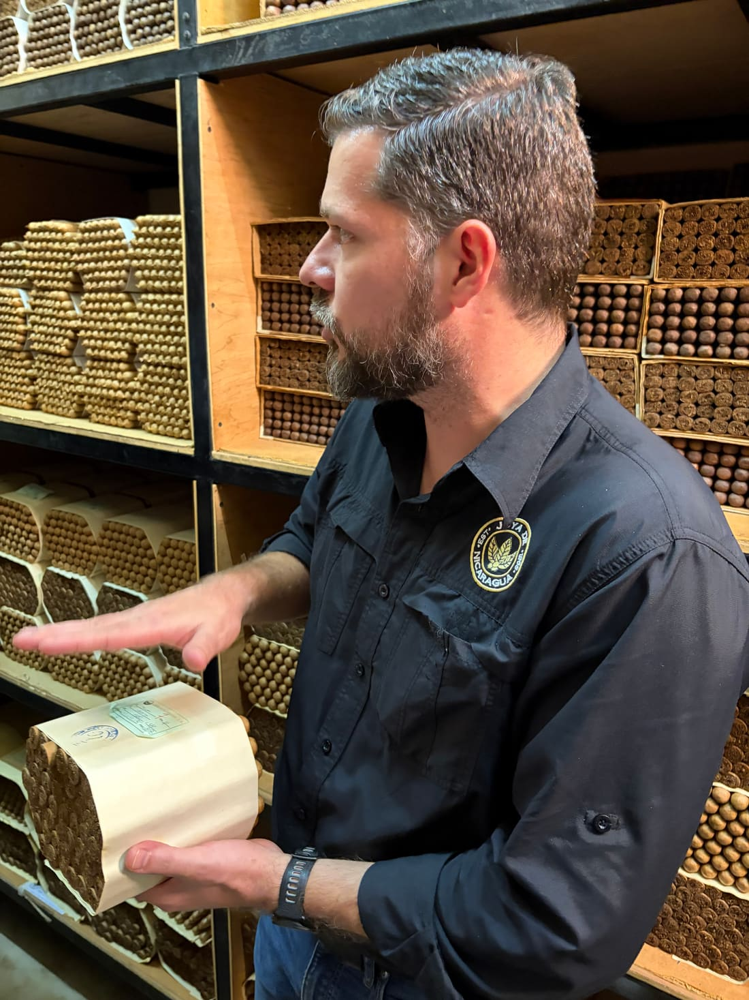
◆ 三、葉と産地 — エステリの火山土、「全部ニカラグア」の伝統
ホヤの伝統ラインは、ラッパー、バインダー、フィラーまですべてニカラグア産で仕立てる「プーロ」が基本です。葉の骨格は3つの産地で組み立てられます。工場のあるエステリは火山性の黒土が生む力強さと土の香りが持ち味で、ブレンドの背骨。北のコンデガが中間をつなぎ、ハラパ渓谷は甘みと香りの良さで知られます。キューバ系の種を、この火山の国の土でどう鳴らすか――1968年以来の課題です。
工場の工程は、キューバ式の手仕事そのものです。巻く前の葉は1枚ずつ色と質で選別され、バインダー（中巻き葉）は太い葉脈を手で取り除いてから使われます。巻き場では束ね手と巻き手が呼吸を合わせ、仕上がった葉巻は熟成室で休んでから出荷されます。
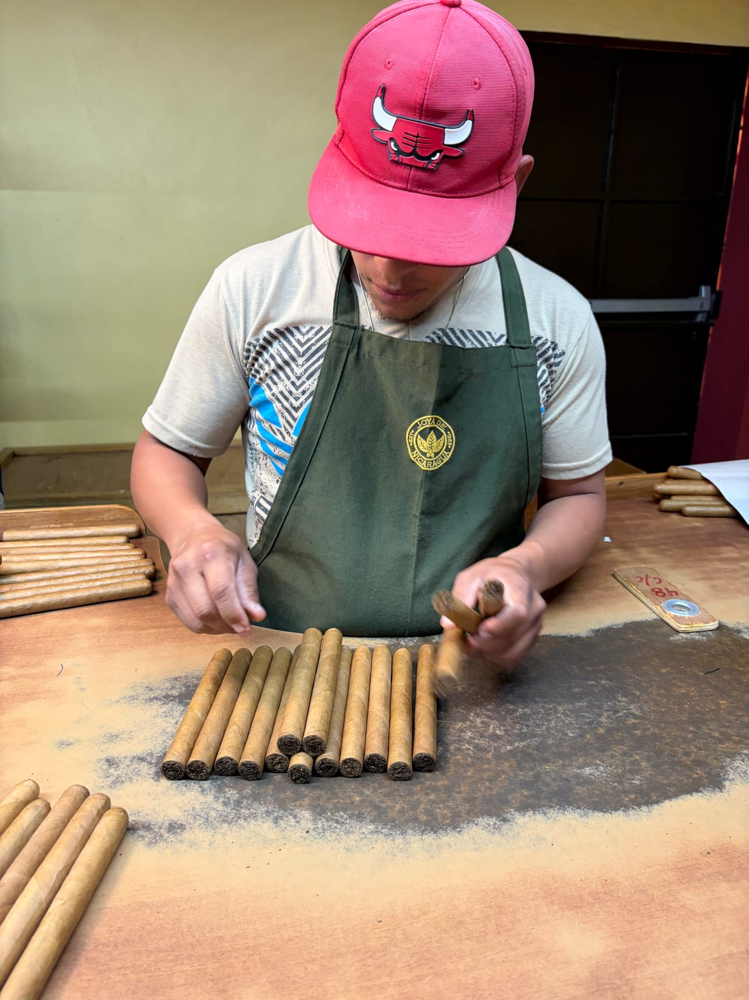
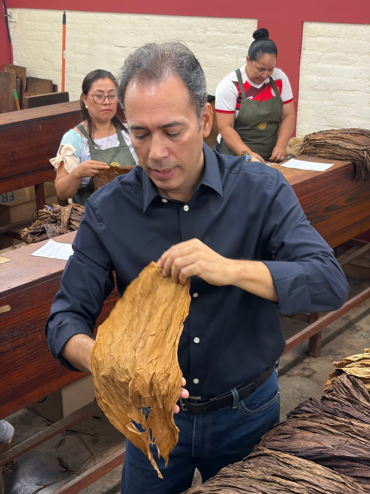
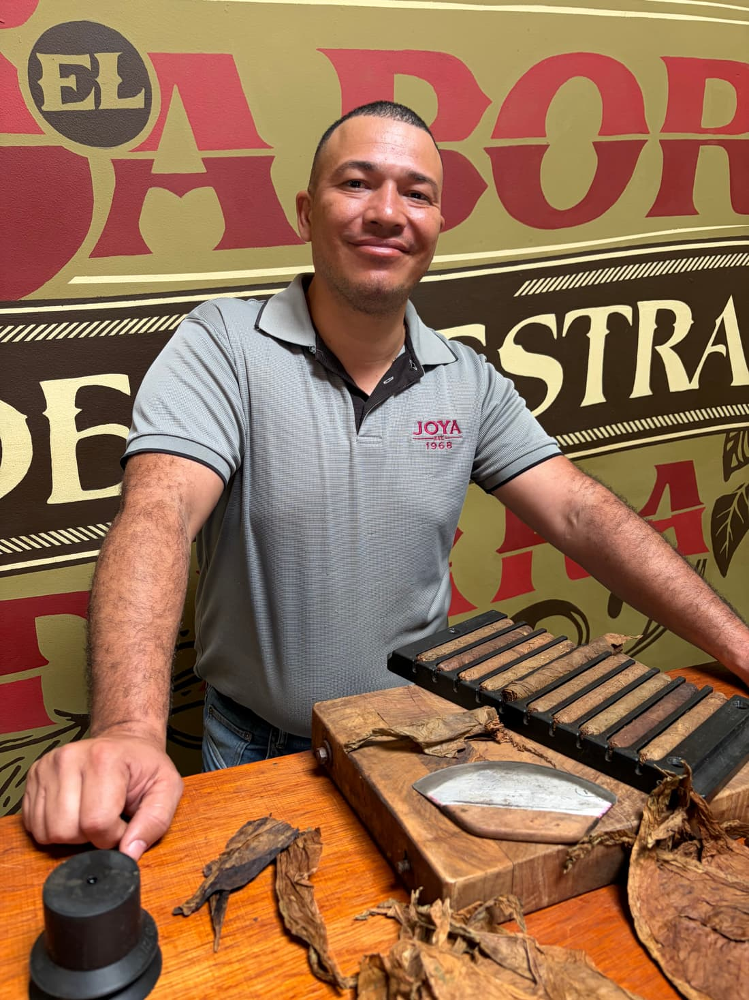
◆ 四、評価 — 50歳を過ぎて獲った、2年連続の「年間最優秀」
ホヤの現代の評価を象徴するのが、専門メディア Halfwheel の「Cigar of the Year」（年間最優秀葉巻）です。2018年、外交官向けに作られていた葉巻「No.1」が同誌の年間1位に選ばれ、翌2019年には Antaño CT ロブストが再び年間1位。創業50年を超えた古豪が、2年連続で頂点を獲ったのです。No.1 はのちに「Número Uno（ヌメロ・ウノ）」として正式なラインに加わりました。
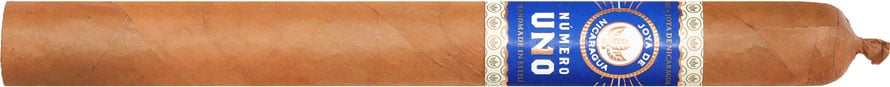

老舗の看板 Antaño 1970 も、発売直後に Cigar Aficionado の Top 25 に入り、Antaño CT ロブストは同誌で93点を得ています（販売店掲載の評価より）。2018年の50周年記念作 Cinco Décadas は、各専門誌の評価を集計する「The Consensus」でその年の首位級の栄誉を受けました。派手な広告ではなく、ブラインドの品評会で積み上げた評価――パドロンとは別の形ですが、こちらも実力で語るタイプのメーカーです。
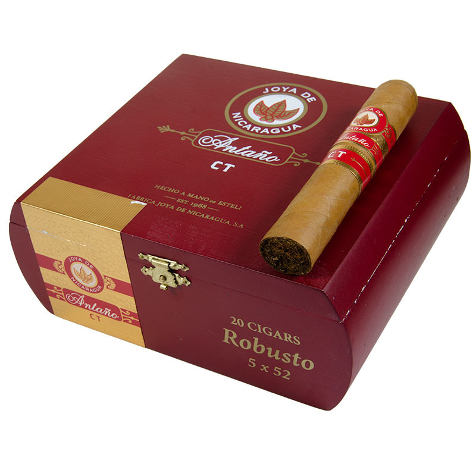
◆ 五、海外の目 — 「世界最強」の看板と、財布への優しさの温度差
日本では「リーズナブルで財布に優しい」がホヤの代名詞ですが、海外、とりわけ米国市場での看板は少し違います。米国の通販 Cigar Place の商品説明は、Antaño 1970 を「Original Nicaraguan Puro（元祖ニカラグア・プーロ）」と呼び、「world's strongest cigar（世界最強の葉巻）」との異名を紹介します。公式史料によれば、2001年の発売時には見本市で「最も強い葉巻」の賞を受け、当時の価格は1本4〜9ドル（今のレートで約630〜1,430円）でした。米国で先に立つのは最古参の出自とフルボディの強さであり、値段の話はその後に付いてくるのです。
評点の面でも、海外では「格」で語られます。Cigar Aficionado の評価データベースでは Número Uno Le Premier が92点。販売店の掲載では、Antaño 1970 Gran Consul にも同誌の92点、Cigar Journal の Número Uno 93点が並びます。評価の章で触れた Antaño CT の93点と合わせ、ホヤは主要ラインに90点台を並べる実力派として認知されているのです。
では、海外で値段はどう語られるのか。米国のレビューサイト Stogies on the Rocks は Antaño 1970 に100点満点で90点を与え、実勢価格「約6ドル（約950円）」に触れて「great value（大いにお買い得）」と評価。筆者は通販で1本4ドルほど（約630円）で手に入れていると明かし、「phenomenal price（破格だ）」とまで書きました。英国の老舗 Turmeaus の購入者レビューでは、Número Uno を指して「Sublime but affordable（至高の味わい、しかし手が届く）」という評し方も見られます。海外でも「お買い得」は確かにホヤの美点です。ただ驚きの向きが、日本の「財布に優しい」という日常価格のイメージとは少し違う。「プレミアムの品質と58年の伝統が、なぜこの値段で」という、格に対する割安感なのです。
作りへの信頼は、消費者の生の声からも読み取れます。Turmeaus の購入者レビューには、「ホヤは最も安定して報われるブランドの一つ。どの銘柄も丁寧に作られ、作りが信頼できる。ドローは概ね滑らかで、燃焼も安定している」といった声が並び、評価は10点満点で8点。Número Uno には「Good value（良い買い物だ。ただし値上がりが目に付くようになった）」という、値段に敏感な英国の買い手らしい一言も残っています。
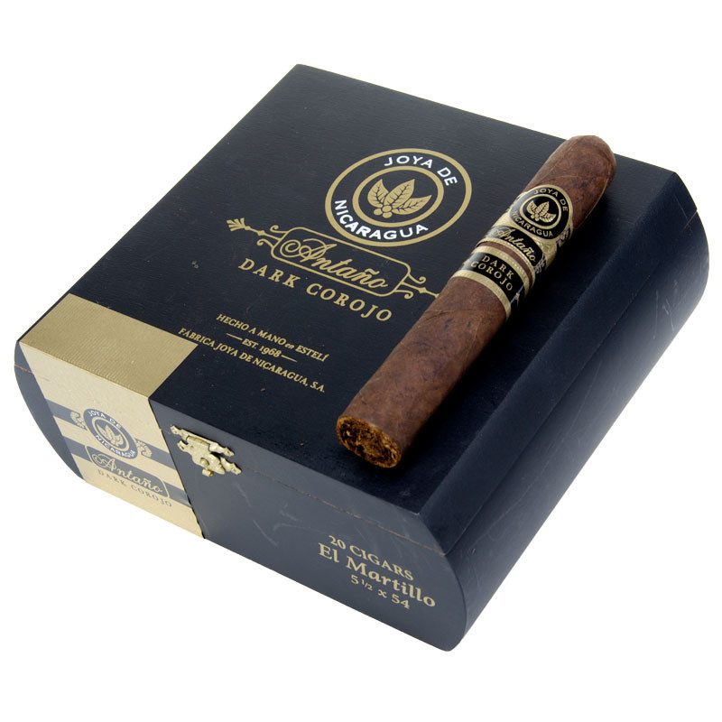
一方で、辛口の声もはっきりあります。主役はこの Antaño Dark Corojo です。米国の通販 Famous Smoke の購入者レビューには、「味の輪郭は素晴らしいのに、2箱続けてドロー（吸い込み）が固かった。道具でほぐしてようやく吸えた。味が良いだけに本当に残念」という書き込みがあり、Holt's の購入者欄にも「味と香りは良いが、詰まっていて引けなかった」という声。レビュー専門サイト CigarScore は El Martillo（実勢8.17ドル、約1,290円）を「価格は素晴らしく、味もかなり良い」としつつ、中盤からドローが締まったことを減点材料に挙げました。Neptune Cigar の購入者評価は平均4.42／5点（55件）と高い一方で、「なかなか火がつかなかった」という作りのばらつきを訴える声も混じります。濃く詰め込まれたリヘロの葉は、強さの源泉であると同時に、ドローの固さという持病の原因でもあるのです。
愛好家のフォーラムでは、Antaño は「nicotine bombs（ニコチンの爆弾）。熟成させると実にうまい」と呼ばれ、常備の1本に挙げられます（米国の愛好家フォーラム CigarGeeks）。総じて海外の消費者がホヤに寄せる信頼は、「安いから買う」ではなく「最古参の本物が、なぜか手頃だから買う」。日本の「財布に優しい」というイメージと根は同じでも、入口の看板が違う――これが、海外から見たホヤの姿です。
◆ 六、代表作 — Antaño の系譜と「傑作選」
クラシコは、1968年の最初の葉巻の直系です。エクアドル産コネチカット・シェードの明るいラッパーで仕立てる穏やかな味わいで、ホワイトハウス時代の栄光を今に伝えます。ヨーロッパ市場で長く愛されてきた、ホヤのもうひとつの顔です。
Antaño 1970（2001年）は、ホヤ復活の狼煙でした。誕生には公式史料に残る面白い逸話があります。50を超える試作を重ねても「これだ」という1本が決まらない中、工場長が持ち込んだのは、生産担当が冗談半分に「お前をぶっ倒すため」に巻いた規格外の試作品。普段は少量しか使わない分厚く重い葉を惜しげもなく使ったその1本が、満場一致で採用されたのです。発売時には「市場で最も強い葉巻」をうたい、見本市では「最も強い葉巻」の賞も受けました。名前の Antaño は「いにしえ（懐かしき昔）」。1970年代の栄光の味を取り戻す、という宣言でした。系譜は Dark Corojo、Gran Reserva、そして CT へと広がっています。
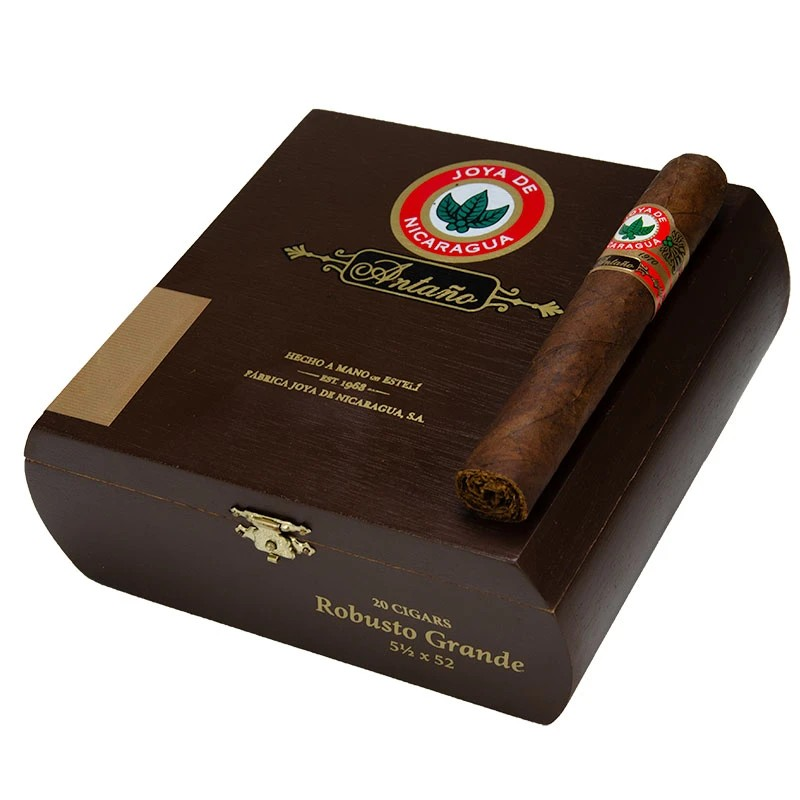
上位には Obras Maestras（傑作選）と呼ばれる一群があります。Cuatro Cinco は45周年の記念作（2013年）で、樽で寝かせた葉を使うのが特徴。今年2026年11月には、2013年から樽で熟成を続けた葉による限定作「Secret Cask」が1万5,000本で出荷されます。Cinco Décadas は50周年（2018年）の記念作で、社蔵の最良のヴィンテージ葉を使い、ビトラ（形）の名前に歴史を刻みました。Diadema は工場で最初に作られた形、Fundador は創業者の2人、El Doctor はクエンカ博士自身、El Embargo は「禁輸」の記憶です。定価は1本20ドル（約3,170円）――ホヤの最高峰でもこの値段です。Número Uno は外交官の葉巻を起源とする限定生産の優雅なラインで、評価の章で触れたとおりです。
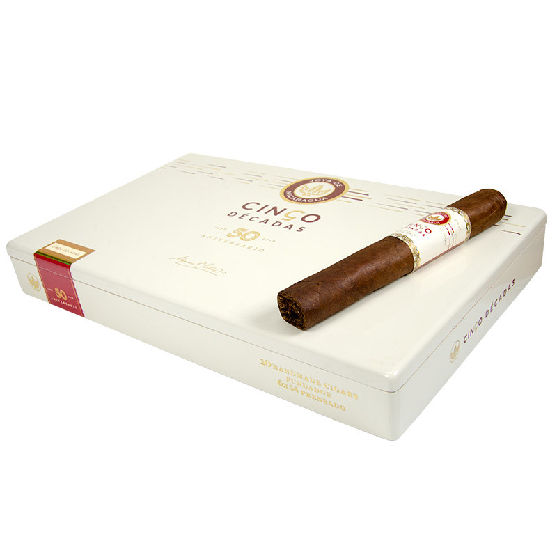
一方、若い世代が主導したモダンな別動隊が JOYA ラインです。Red、Black、Silver（ホヤ初のボックスプレス）、Cabinetta と、現代の味覚に向けた設計で新しい客層を開きました。55周年（2023年）の Cinco de Cinco はメキシコ・サンアンドレスのラッパーをまとう記念作です。伝統のプーロと現代的なラインを両輪で回すのが、今のホヤの姿です。
◆ 七、ライバルとコラボ — 独立独歩の製造、組む販売
エステリの競合図の中で、ホヤの立ち位置は独特です。格式の頂点に君臨するパドロン、他社のブレンドまで請け負う「ブレンダー帝国」のマイファザー（ガルシア家）、中米最大級の葉の栽培者プラセンシア、量産ブレンダーとして存在感を増す AJ フェルナンデス、そしてオリバ、ペルドモ。後発の巨人たちが居並ぶ中で、ホヤは「最も古く、最も手頃」な1社として、別の極に立っています。
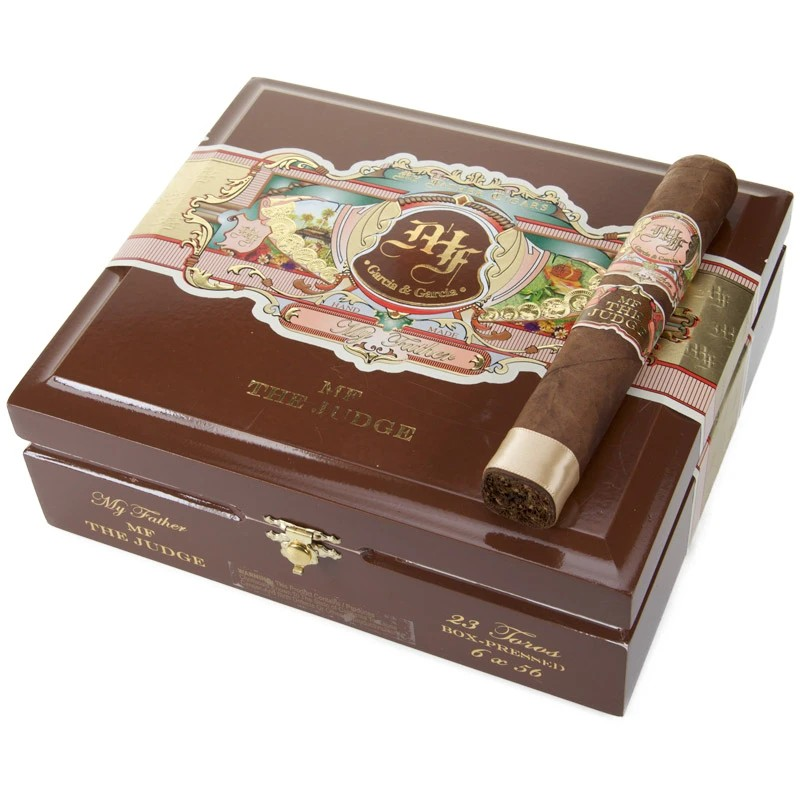
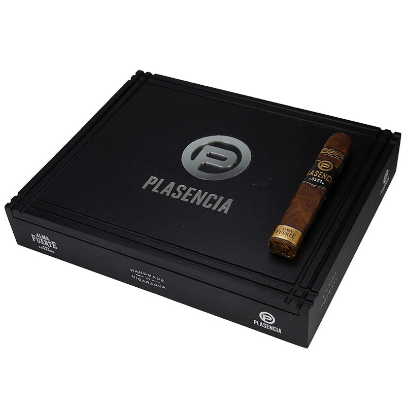
コラボレーションの有無は、はっきり書いておきます。他メーカーとの共同銘柄（いわゆるコラボ葉巻）は、ホヤはほとんど作りません。その代わり、形を変えた協業はあります。自社工場で他ブランドの葉巻を巻く受託製造です。ダンバートン・タバコ＆トラストの Sobremesa、フラテッロ、英国の Charatan などがこの工場から生まれてきました。ブレンドの共同開発ではなく、「腕の貸し出し」。最古参の工場の技術が、他社の看板を支えてきたのです。
販売面では、大きな提携を組んできました。米国での販売は2008年からドリュー・エステートが担い、17年間続きました（2018年は提携10周年の年で、缶入りのミニシガーや、見本市 TAA 限定の Antaño Gran Reserva Presidente といった企画も生まれています）。転機は2025年9月。ホヤはこの提携の終了を発表し、2026年1月からは、ドミニカのケサーダ家との合弁販売会社「SAG Imports」で自ら売る道を選びました。実は2008年以前にホヤの米国販売を担っていたのもケサーダの SAG で、これは18年ぶりの「再会」でもあります。製造は独立独歩、販売では組む相手を選ぶ。その二面性が、ホヤの生き残り方です。
この提携には、数字だけでは測れない裏側があります。ドリュー・エステート創業者のジョナサン・ドリューは、提携終了の発表の席でこう明かしました。「ホヤ・デ・ニカラグアは1998年から私の人生で意味のある存在だった。販売提携が始まる17年前より、ずっと前からだ」。つまり2008年の契約は、冷たい商談ではなく、10年来の個人的な縁の延長だったのです。別れの言葉も印象的でした。クエンカ会長は「これは関係の終わりではなく、関係の自然な進化だ」と述べ、「ジョナサン、グレン、そしてドリュー・エステートの全員に、私たちの物語の一部でいてくれたことを感謝する」と結んでいます。喧嘩別れの珍しくない業界で、これはかなり上品な別れ方でした。
共同銘柄の例外も、この提携から生まれています。2011年の「My Uzi Weighs a Ton（マイ・ウジ・ウェイズ・ア・トン、通称 MUWAT）」は、ジョナサン・ドリュー自身がブレンドし、両社の葉を持ち寄ってホヤの工場で巻いた、正真正銘の共同作です。発売前のサンプルをドリュー本人がフロリダ州ペンサコーラのイベントに持ち込んで配ったのが、初披露でした。そして人の縁は、提携が終わった後も続いています。復活した SAG Imports の CEO には、元ドリュー・エステートのマーケティング副社長、ハイメ・フローレス＝エストラーダが就きました。ホヤの米国販売を知り尽くした人物が、そのまま新体制の舵取りを担っているのです。
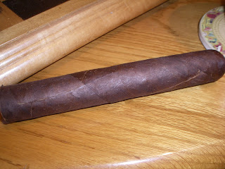
◆ 八、価格の検証 — 本当に「安くて美味い」のか
最後に、この特集の出発点だった言葉を数字で確かめます。以下は2026年11月7日に確認した、日本へ発送できる店の実際の販売価格です（送料・関税は別）。
Antaño 1970 Alisado トロ（6×52）
・20本箱 $164.50（約¥26,060）｜1本あたり約¥1,303
・5本パック $53.95（約¥8,550）｜1本あたり約¥1,709
・単品 $13.80（約¥2,190）は確認時点で品切れ表示
※ホヤのセール中（MSRP比最大30%OFF、11月10日まで）
Antaño CT ロブスト（5×52、Cigar Aficionado 93点）
・20本箱 $191.06（約¥30,260）｜定価 $233（約¥36,910）｜1本あたり約¥1,513｜在庫あり
Joya Silver トロ（6×52）
・20本箱 $162.36（約¥25,720）｜定価 $198（約¥31,360）｜1本あたり約¥1,286｜在庫あり
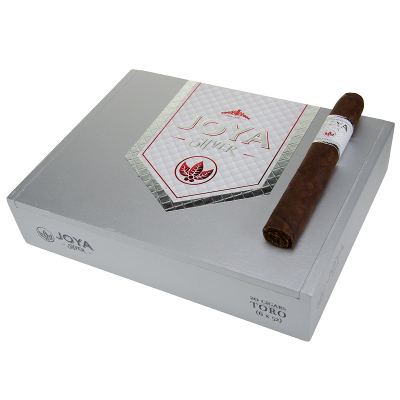
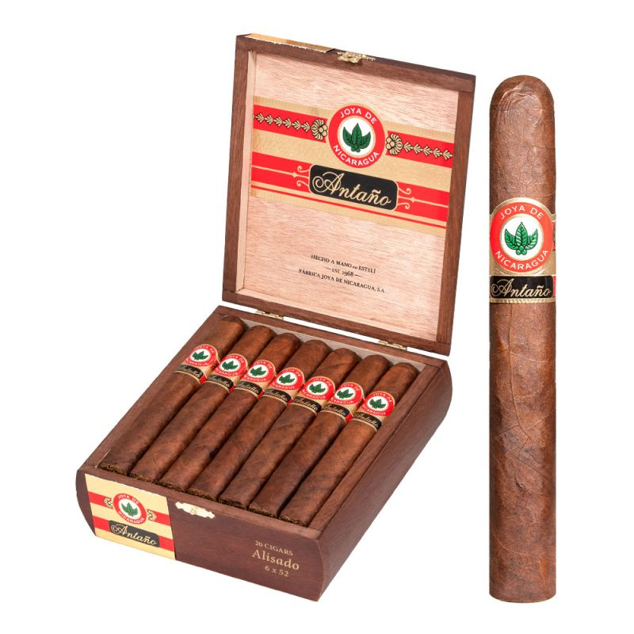
桁感をつかむために、今朝の巡回で確認したキューバの人気銘柄と並べてみます。パルタガス・ルシタニアスは10本で $599（約¥94,900）。Antaño 1970 の20本箱は、その3分の1以下の値段で、本数は2倍です。しかも Antaño は専門誌の年間最優秀を身内（CT）が持つ実力派。ホヤの最高峰 Cinco Décadas ですら定価は1本20ドル（約¥3,170）で、キューバの限定品1本分に遠く及びません。「安くて美味い」は、宣伝文句ではなく価格表の事実でした。
◆ 九、締め — 58年目の「自立」
2026年、ホヤ・デ・ニカラグアは静かな再出発の年を迎えています。17年連れ添ったドリュー・エステートの大きな傘を離れ、ケサーダ家と手を組んで、自分の名前で自分の葉巻を売る。創業58年目の「自立」です。
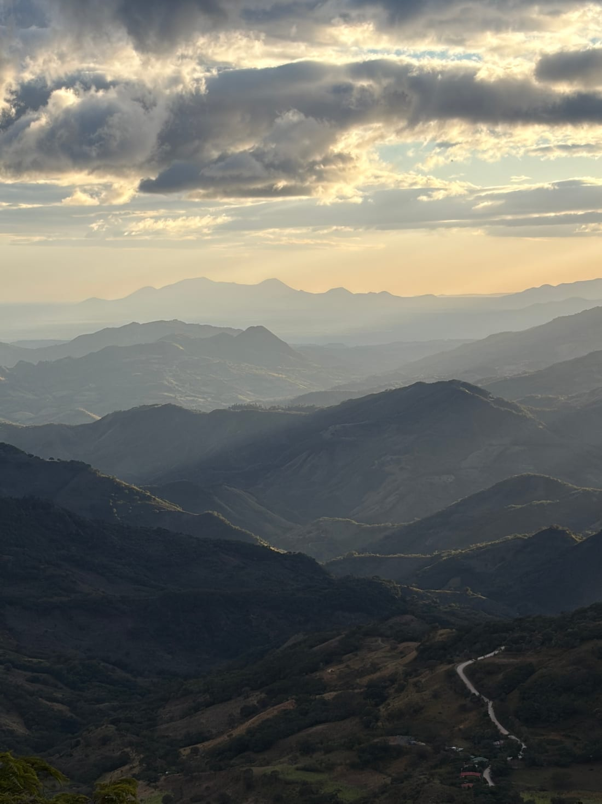
革命で燃え、爆撃を受け、国有化され、看板の商標まで失った会社が、今もエステリの同じ街で、1本1,300円の葉巻を巻き続けている。ホワイトハウスの公式葉巻だった誇りと、労働者の町工場の意地。その両方を抱えたまま、ホヤは「ニカラグアの宝石」の名に恥じない仕事を続けています。キューバが高嶺の花になった今、日常に置ける本物のプーロとして、この古豪の名前を覚えておいて損はありません。
特集の締めに、ホヤの代表作と、限定・特別・レアなラインを写真と実売価格で並べます。価格はすべて2026年11月7日に各販売店の商品ページで確認した現在の表示で、日本へ発送できる店だけを載せています（送料・関税は別）。在庫は確認時点の状態です。
クラシコ・ロブスト（Clásico Robusto）
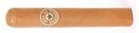
$149.00（約¥23,602）｜1本あたり約¥944
販売店：CigarTerminal ★★★☆☆（日本発送可）｜在庫：あり
1968年の創業銘柄の直系。ホワイトハウス御用達だった頃の姿を残す、最も穏やかなホヤです。 ▶ 商品ページ（CigarTerminal）
アンタニョ 1970 ロブスト・グランデ（Antaño 1970 Robusto Grande）
$191.08（約¥30,267）｜定価 $233.02｜1本あたり約¥1,513
販売店：Atlantic Cigar ★★★★☆（日本発送可）｜在庫：あり
「世界最強クラス」の異名を持つ看板銘柄。本編の価格検証でも触れた、ホヤの顔です。 ▶ 商品ページ（Atlantic Cigar）
アンタニョ・ダークコロホ エル・マルティージョ（Antaño Dark Corojo El Martillo）
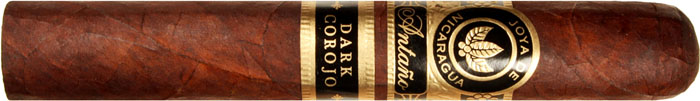
$181.30（約¥28,718）｜定価 $220.00｜1本あたり約¥1,436
販売店：Neptune Cigar ★★★☆☆（日本発送可）｜在庫：あり
Antaño 1970をさらに濃くした「ハンマー」。Atlantic Cigarでは $191.08 で、こちらが最安でした。 ▶ 商品ページ（Neptune Cigar）
アンタニョ CT ロブスト（Antaño CT Robusto）
$191.06（約¥30,264）｜定価 $233.00｜1本あたり約¥1,513
販売店：Atlantic Cigar ★★★★☆（日本発送可）｜在庫：あり
明るいコネチカット葉で「ホヤ＝強い」の常識を覆した一本。Cigar Aficionado 93点、Halfwheel の2019年年間最優秀。 ▶ 商品ページ（Atlantic Cigar）
クアトロ・シンコ レゼルバ・エスペシャル トロ（Cuatro Cinco Reserva Especial Toro）
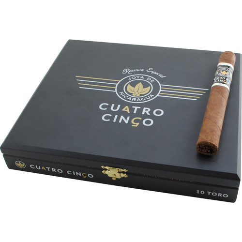
$132.02（約¥20,912）｜1本あたり約¥2,091
販売店：Atlantic Cigar ★★★★☆（日本発送可）｜在庫：商品ページに価格表示あり（在庫数の明示なし）
もとは創業45周年の限定品として生まれ、人気を受けて定番化した銘柄です。 ▶ 商品ページ（Atlantic Cigar）
ホヤ・レッド カニョナソ（Joya Red Canonazo）
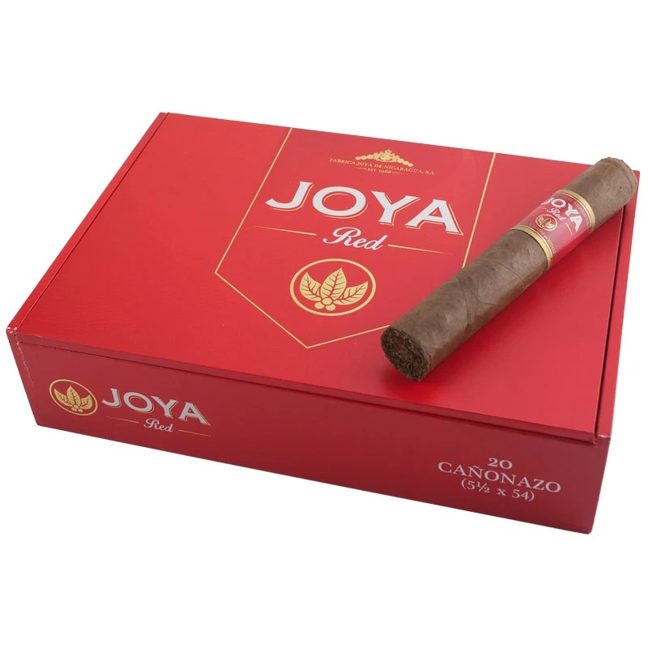
$106.80（約¥16,917）｜定価 $178.00｜1本あたり約¥846
販売店：Atlantic Cigar ★★★★☆（日本発送可）｜在庫：あり
現代ホヤの入り口。1本あたり約¥846は、このギャラリー最安です。 ▶ 商品ページ（Atlantic Cigar）
ホヤ・ブラック トロ（Joya Black Toro）
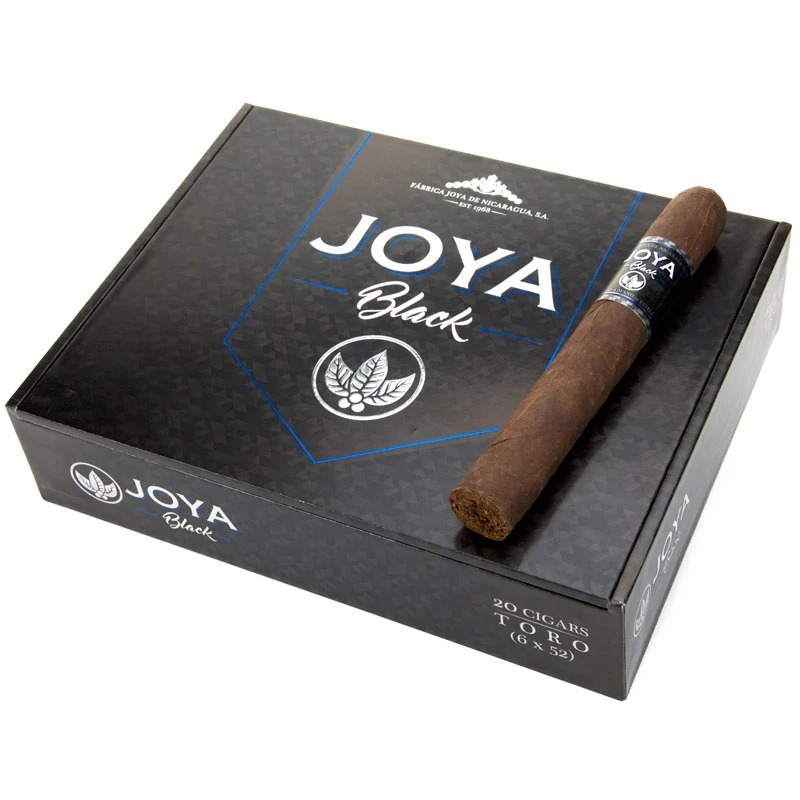
$162.36（約¥25,718）｜定価 $198.00｜1本あたり約¥1,286
販売店：Atlantic Cigar ★★★★☆（日本発送可）｜在庫：あり
比較：CigarTerminalでは20本箱 $159.00（約¥25,182）・在庫ありで、わずかに安くなっています。 ▶ 商品ページ（Atlantic Cigar） ▶ 商品ページ（CigarTerminal）
ホヤ・シルバー トロ（Joya Silver Toro）
$162.36（約¥25,718）｜定価 $198.00｜1本あたり約¥1,286
販売店：Atlantic Cigar ★★★★☆（日本発送可）｜在庫：あり
エクアドル産コロホ葉のラッパーで、銀の箱が目印。ブラックと並ぶ現代ラインの柱です。 ▶ 商品ページ（Atlantic Cigar）
キャビネッタ・ロブスト（Cabinetta Robusto）
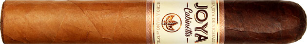
$138.95（約¥22,010）｜定価 $169.00｜1本あたり約¥1,100
販売店：Neptune Cigar ★★★☆☆（日本発送可）｜在庫：あり
頭は明るいコネチカット葉、足元は濃いマデューロ葉という2色のラッパーが特徴です。 ▶ 商品ページ（Neptune Cigar）
シンコ・デカダス フンダドール（Cinco Décadas Fundador）
$200.90（約¥31,823）｜1本あたり約¥3,182
販売店：Atlantic Cigar ★★★★☆（日本発送可）｜在庫：商品ページに価格表示あり（在庫数の明示なし）
ヌメロ・ウノ ル・プルミエ（Número Uno Le Premier）
$256.45（約¥40,622）｜定価 $269.75｜1本あたり約¥3,125
販売店：Neptune Cigar ★★★☆☆（日本発送可）｜在庫：あり
シンコ・デ・シンコ トロ（Cinco de Cinco Toro）
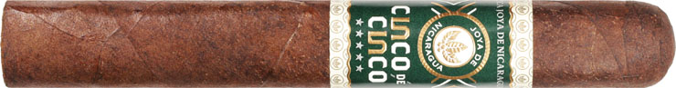
$166.50（約¥26,374）｜定価 $202.50｜1本あたり約¥2,637
販売店：Neptune Cigar ★★★☆☆（日本発送可）｜在庫：あり
アンタニョ・グラン・レゼルバ グラン・コンスル（Antaño Gran Reserva Gran Consul）
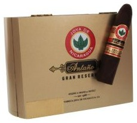
$199.00（約¥31,522）｜1本あたり約¥1,576
販売店：CigarTerminal ★★★☆☆（日本発送可）｜在庫：あり
クアトロ・シンコ シークレット・カスク（Cuatro Cinco Secret Cask）
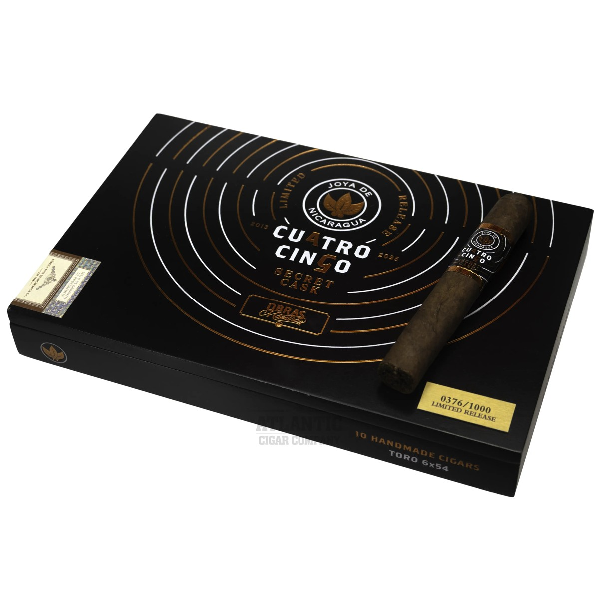
$189.50（約¥30,017）｜1本あたり約¥3,002
販売店：Atlantic Cigar ★★★★☆（日本発送可）｜在庫：あり
特集の主な出典：ホヤ・デ・ニカラグア公式（「The History of the Full Strength Antaño 1970」ほか公式史料）／Halfwheel（ドリュー・エステートとの販売提携終了と SAG Imports 合弁、年間最優秀、Cinco Décadas、Cuatro Cinco Secret Cask の各報道）／Fine Cigars Club 工場取材記（2026年1月、エステリ）／Cigar Coop／Tobacco Asia／Tobacco Reporter／Cigar Aficionado（同誌評価データベースを含む）。海外の消費者評価は、米国・英国の販売店に寄せられた購入者レビュー（Turmeaus／Famous Smoke／Neptune Cigar／Holt's）と、レビューサイト CigarScore、Stogies on the Rocks、愛好家フォーラム CigarGeeks の書き込みに基づく。価格は2026年11月7日に各販売店の商品ページで確認。巻末ギャラリーの価格・在庫は Atlantic Cigar、Neptune Cigar、CigarTerminal の商品ページで同日に確認し、限定生産数などの根拠は Cigar Coop、Halfwheel の発売報道と各店の商品説明に基づく。写真は各キャプションに出典を明記。地図は当ニュース作成の模式図です。